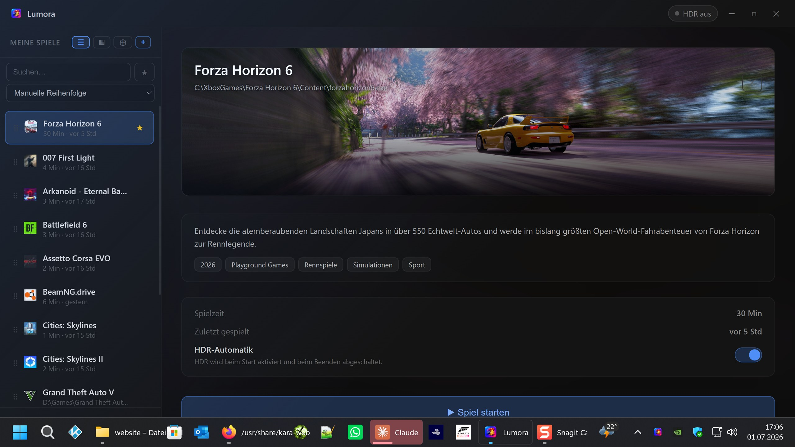

Steam, Epic, GOG, Xbox, EA, Ubisoft & more — Lumora unifies your whole game collection in one beautiful cover library. At your desk with a mouse, on the couch entirely with a gamepad. HDR switches on per game automatically. The performance OSD shows you FPS, GPU and CPU right in the game — with no Afterburner & co. — and you share your game live in 4K with sound via a link — Lumora sets up the connection automatically, with no manual port forwarding, thanks to an IPv6 direct path even on many modern connections without a public IPv4 address.
Lumora is a Windows program
It can’t be installed on a phone. Open this page on your Windows PC — or quickly send it to yourself:
✓ Link copied – now paste it on your PC
— downloads

List view – details, description & per-game HDR toggle
Tap to enlarge
How it works
Set it up once, then everything runs automatically in the background.
Detect them automatically with the scanner, or add them manually via .exe or .lnk. Game covers load automatically.
Click “Launch game” — Lumora enables HDR and starts the game. A brief moment of preparation, then off you go.
After you quit the game, Lumora turns HDR back off automatically. No manual intervention needed.
The performance OSD overlays FPS, GPU and CPU stats on any borderless game — and it does so without MSI Afterburner, without RTSS, without tinkering. Turn it on, play, keep an eye on everything.
Precise measurement via Intel’s PresentMon technology — for every game, every engine. Already running RTSS? Then Lumora simply uses it automatically.
What normally only works with Afterburner & co., Lumora handles via the signed open-source driver PawnIO: one click, one Windows confirmation, done. AMD Ryzen and Intel Core.
Load, temperature, clock, power and VRAM — straight from the NVIDIA (NVML) or AMD driver (ADL). Multiple graphics cards? Lumora picks the fast one automatically, but you can also set it manually.
From “Compact” to a horizontal tile strip — plus free choice of which values you want to see. Size, transparency and screen position included.
The standout feature: reshape the OSD while the game runs. Drag with the mouse, cycle through designs, toggle values on and off — or do it all comfortably with a gamepad from the couch.
Freely bindable hotkey on keyboard and gamepad combo — works mid-game, even in borderless fullscreen.
Setup? One dialog, one Windows confirmation — Lumora handles the rest and transparently shows you every step. In the settings you can always see which source each value comes from.
Features
No bloat, no cloud, no accounts.
Automatically detects games from Steam, Epic, GOG, Ubisoft, Xbox Game Pass, EA, Battle.net, Rockstar, Amazon and Riot. You can add your own folders too.
Switchable grid and list view with beautiful cover art. Launch straight from the grid via ▶.
Tracks your playtime across all stores in one place. The playtime recap neatly summarizes total time, top games and favorite genre.
FPS, frametime graph, GPU and CPU stats over any borderless game — without Afterburner or RTSS, adjustable live in-game. All the details ↑
Stream your game in up to 4K with sound straight from Lumora – viewers just open a link in their browser, no install at all. Either the whole screen or a specific window/game. Hardware encoding on your graphics card, with a viewer list and an adjustable playback buffer. The connection sets itself up automatically – Lumora detects your router, opens the required port itself and, on modern connections without a public IPv4 address, uses the IPv6 direct path. A custom TURN server is possible, for pros.
Mark favorites, search instantly and sort by name, playtime or last played.
The entire interface can be operated with an Xbox controller – living-room-ready on the TV. D-pad/stick navigate, A selects and launches, B goes back. As you browse, the game is shown right away.
A global hotkey brings Lumora to the front anywhere or hides it again – either as a key combination or as a gamepad button combo (e.g. the Xbox button).
Lumora checks for new versions at startup and updates itself on request – no more manual downloads.
Covers, hero banners as well as description, genre and release year load automatically. If something doesn’t fit, you pick from several sources yourself (Steam, Microsoft Store, optionally SteamGridDB) or drop in your own image.
HDR turns on when a game starts and back off when it quits — toggleable per game, usable for non-HDR games too.
Custom launch arguments per game and “run as administrator” — ideal for mods and special cases.
Selectable accent colors, system tray and autostart with Windows. Dynamic background from the game artwork.
No cloud, no registration, no background processes after closing. Internet only for loading covers & info.
What’s new
Lumora is continuously being developed. The most important changes per version:
Installation
The installer sets everything up — no manual extraction needed.
Download the setup file Lumora Setup 2.2.12.exe.
Windows SmartScreen notice: Since the app has no paid code-signing certificate, Windows may show a warning. Click “More info” → “Run anyway” to continue. All components used are documented below under “Transparency”.
Run the installer. Lumora is installed under %LocalAppData%\Programs\lumora and appears in the Start menu.
On first launch the game scanner opens automatically and searches for installed games.
System requirements
Transparency
Lumora is built entirely from freely available open-source components. Here is a complete list of all third-party technologies used.
| Component | Version | Usage | License | Source |
|---|---|---|---|---|
| Electron | 42.3.0 | App framework, bundles Node.js + Chromium | MIT | electronjs.org |
| Node.js | (included in Electron) | File system, process management, IPC | MIT | nodejs.org |
| Chromium | (included in Electron) | Rendering engine for the user interface | BSD/MIT | chromium.org |
| HDRCmd.exe part of HDRTray |
0.5.5 | Command-line tool to turn Windows HDR on/off | GPL v3 | github.com/res2k/HDRTray © 2022–2025 Frank Richter |
| PresentMon | 2.5.1 | Precise FPS/frametime measurement for the OSD (ETW-based, no game injection) | MIT | github.com/GameTechDev/PresentMon © Intel Corporation |
| PawnIO | 2.x | Signed kernel driver for CPU sensors (temperature/power) — not bundled, but installed from the official source on request (signature is verified) and uninstallable via “Apps & Features” | GPL v2 | pawnio.eu © namazso |
| PawnIO-Module AMDFamily17, IntelMSR |
0.2.9 | Official, verified sensor definitions for AMD/Intel CPUs (run sandboxed in the PawnIO driver) | LGPL 2.1 | github.com/namazso/PawnIO.Modules © namazso |
| koffi | 3.1 | Binding to Windows APIs (sensors, gamepad, shared memory) | MIT | koffi.dev © Niels Martignène |
| FFmpeg | Git-Build (LGPL) | Image capture and hardware encoding for streaming | LGPL v3 | ffmpeg.org Build: github.com/BtbN/FFmpeg-Builds (without GPL components) |
| mediamtx | 1.19.2 | WebRTC server — distributes the stream to viewers’ browsers | MIT | github.com/bluenviron/mediamtx |
| Vortice.Windows | 3.6.2 | Direct3D / Windows Graphics Capture in the capture helper | MIT | github.com/amerkoleci/Vortice.Windows |
| NAudio | 2.2.1 | System audio (WASAPI loopback) for the stream sound | MIT | github.com/naudio/NAudio |
| .NET-Runtime | 8.0 | Runtime of the capture helper (lumora-capture.exe) | MIT | dotnet.microsoft.com |
| electron-updater | 6.x | Automatic updates | MIT | electron.build |
| electron-builder | 26.8.1 | Build tool for creating the installer (not included in the app) | MIT | electron.build |
resources/app.asar
and can be viewed in the HDRTray GitHub repository.
resources folder; the sources can be viewed via ffmpeg.org or the respective repositories.